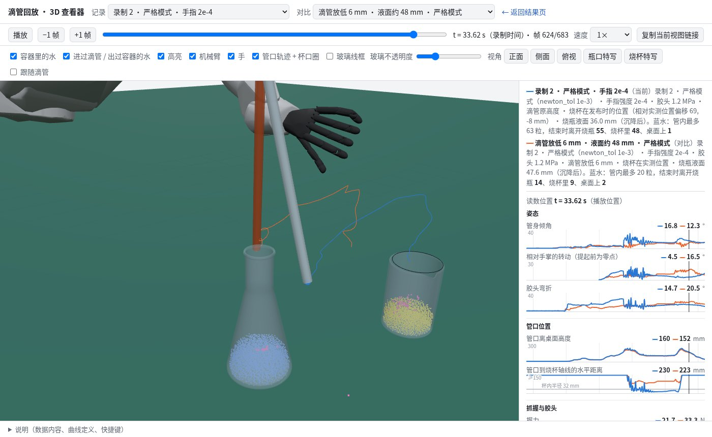
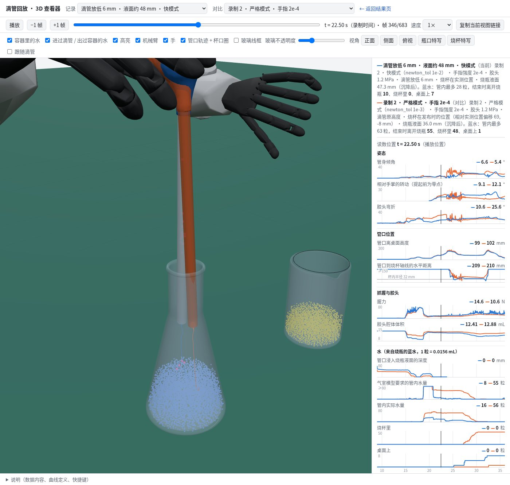
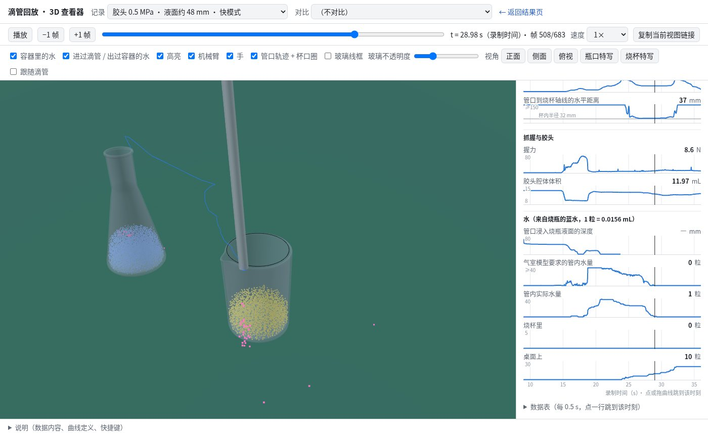
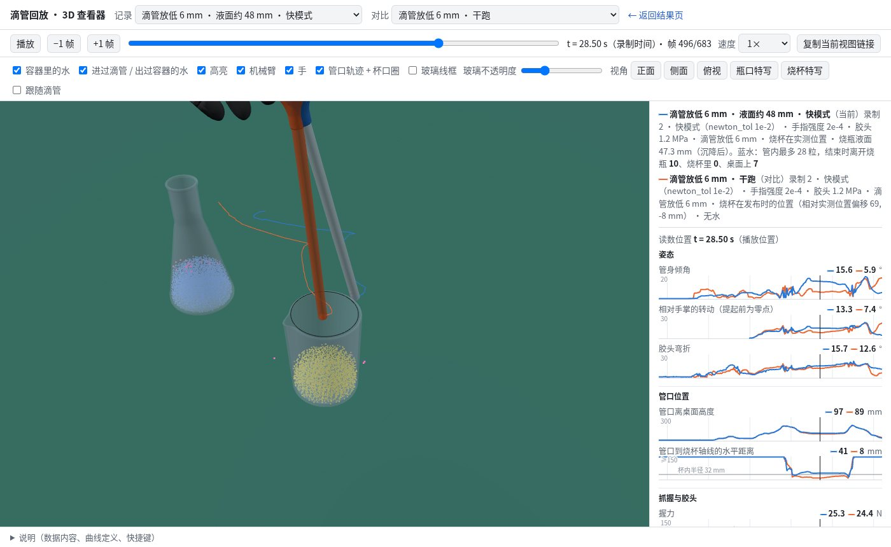

双臂灵巧手滴管取液：Rokae AR5 + Wuji 手遥操作回放
实验台演示里的“滴管取液”原来由 FR3 机械臂完成，动作是按脚本生成的。这次换成一段真实的遥操作录制： 双臂 Rokae AR5，每条臂末端一只 20 自由度的 Wuji 灵巧手，录制里有全部关节角。我们把这段录制逐关节回放进 StiffGIPC。右手捏住立在烧瓶里的玻璃滴管胶头，挤压、松开，吸进蓝水； 接着把滴管提出瓶口，移到装黄水的烧杯上方挤压滴液，最后放回烧瓶（这一步没有复现成功，见第六节）。机器人、玻璃器皿、硅胶胶头和水在同一个 IPC Newton 求解里双向耦合，水用 MPM。 结果：吸水、提起、移到烧杯上方这几步都能稳定复现。滴液能否落进烧杯，取决于滴管离开瓶颈那一刻的“甩动”，8 组带水仿真里只有 1 组把明显的水量滴进了烧杯（第四节）。
一、场景
| 物体 | 模型 | 来源 |
|---|---|---|
| 双臂 AR5 + Wuji 手 | 69 个刚体（ABD）、54 个转动关节，按录制角度做位置伺服；碰撞网格是简化后封闭的凸包网格，渲染用原始网格 | 厂商 AR5 URDF + Wuji 手的 USD 导出网格，按录制里的安装方式装在法兰上（手绕法兰轴转 ±60°） |
| 手指驱动 | “软”伺服：强度 5e-5，相当于电流受限的电机，捏到胶头时会被顶住而不是把胶头压扁 | 见第二节的注 |
| 烧瓶、烧杯 | 刚体玻璃，按参考模型的尺寸；烧瓶装 45 mm 高的蓝水，烧杯装黄水 | 实验室参考模型（flask / beaker） |
| 水 | MPM Lite，dx 5 mm，粒子间距 2.5 mm，共 13,297 个粒子；隐式表面张力 0.072 N/m；与玻璃、胶头和手指在 IPC 里双向耦合 | 液体模块的 v14 配置（液体开发日志） |
| 桌面 | 解析地面，高度从录制里胶头的初始位置反推（烧瓶底 + 胶头赤道高度） | — |
时间：录制里手臂关节约 100 Hz、手指约 70 Hz，插值到仿真的 200 Hz（dt = 5 ms），从录制的 8 s 跑到 35 s，共 5460 步，一张 A800 上约 4.2 小时。
标定只用到录制本身：从右手第一次捏住胶头那一帧的指尖位置推出滴管和烧瓶的位置；烧杯放在录制里挤压滴液时管口的正下方，再加一个按仿真实测管口位置修正的偏移。
二、滴管模型
- 玻璃管：刚体，长 200 mm，内径 6.4 mm、外径 9.2 mm。最初把整支滴管都做成有限元，玻璃太硬，PCG 每步要 4 s，于是拆成刚体玻璃管 + 有限元胶头。
- 硅胶胶头：有限元，9416 个四面体，E = 0.5 MPa。颈部 60 个顶点用双向弹簧缝到玻璃管上。改用双向弹簧是因为单向的 FEM pin 只让胶头跟着玻璃管走，反过来手捏胶头时玻璃管不受力。胶头和玻璃管之间关掉碰撞。
- 吸液：胶头腔体里是封闭的空气。腔体体积每步从胶头内表面算出；松开胶头时体积变大，管口在水里就按体积差把水沿管吸进去，管口在空气里就吸进空气。挤压时反过来把管里的水推出去。
注：手指为什么要“软”。引擎的转动关节驱动能量不乘 dt²，等效刚度是 强度 × 质量 / dt²。默认强度下 Wuji 手指的刚度高到能把硅胶胶头直接压扁，胶头会从指间弹出去。 强度降到 5e-5 后，手指按录制角度运动，碰到胶头就停在接触位置（右手指关节跟踪误差 ≤ 1.5°），这和真实灵巧手电流受限时的行为一致。手臂关节保持高刚度，跟踪误差 ≤ 0.1°。
三、结果（发布的这一组）
| 录制时间 | 阶段 | 管口高度 | 滴管倾角 | 管内蓝水 | 烧杯中蓝水 | 桌上蓝水 |
|---|---|---|---|---|---|---|
| 14.7 s | 捏住胶头（挤出空气） | 13 mm | 1° | 0 | 0 | 0 |
| 17.7 s | 松开吸液 · 提起 | 71 mm | 10° | 60 | 0 | 0 |
| 19.7 s | 滴管还在瓶颈里 | 154 mm | 8° | 58 | 0 | 0 |
| 20.7 s | 离开瓶颈，甩动 | 242 mm | 39° | 20 | 0 | 18 |
| 24.7 s | 挤压滴液 | 142 mm | 23° | 3 | 10 | 42 |
| 26.7 s | 滴完 | 133 mm | 20° | 1 | 11 | 43 |
| 32.7 s | 往瓶口放回（没对准，管口在瓶外） | 17 mm | 9° | 1 | 11 | 43 |
水量以粒子计，1 个粒子 = 0.0156 ml。整个过程中烧瓶只被带动 1 mm，烧杯不动。烧瓶里的水在滴管插入、吸液、提出时保持在瓶里。
甩动从哪来。录制里滴管出瓶时的路径并不正好沿瓶颈轴线。瓶颈逼着滴管相对手指转了约 10°，硅胶胶头把这个扭转存成弹性能；滴管一离开瓶颈，扭转就被释放，滴管倾角在不到 1 s 内从 8° 跳到 30°–40°。 管里的水被甩出约 2/3，而且之后的倾角和管口位置每组都不一样，相差 2–5 cm，烧杯内半径只有 3.2 cm。
我们试过三种办法：
- 让管内水柱整体跟着管子走（
--pump-track 1.0）：甩出的水量没有明显变化。 - 把胶头从 1.2 MPa 降到 0.5 MPa 或 0.3 MPa：甩动后的倾角更快回到 10°–20°，但甩动本身仍在。
- 按实测管口位置重新摆烧杯：没有用，因为管口位置每组都不同（第四节）。
四、八组带水仿真
全部是同一段录制、同一套参数，只改表里的列。“吸入”是滴管还在瓶颈里时管内的蓝水粒子数，“进烧杯”和“桌上”都是 35 s 时的计数。
| 组 | 胶头 E | 其他 | 烧杯偏移（mm） | 吸入 | 进烧杯 | 桌上 |
|---|---|---|---|---|---|---|
| A（发布） | 0.5 MPa | — | 14, 34 | 60 | 11 | 43 |
| B | 0.3 MPa | — | 14, 34 | 31 | 2 | 24 |
| C | 1.2 MPa | 水柱跟随 | 14, 34 | 35 | 4 | 24 |
| D | 1.2 MPa | 水柱跟随，粒子种子 0.30 | 14, 34 | 30 | 1 | 24 |
| E | 0.3 MPa | — | −6, 22 | 33 | 4 | 28 |
| F | 0.5 MPa | — | −6, 22 | 51 | 2 | 41 |
| G | 0.3 MPa | 粒子种子 0.30 | −6, 22 | 28 | 0 | 24 |
| H | 0.5 MPa | — | 34, 16 | 51 | 0 | 49 |
8 组里有 6 组把水滴进了烧杯，但只有 A 组超过 4 个粒子。A 和 F、H 的设置只差烧杯位置：烧杯不参与滴液之前的任何接触，可是改了它，黄水粒子的位置和整个求解的舍入就跟着变，到甩动那一刻已经足以让结果分叉。 所以 A 组的 11 个粒子应当看作“一次成功的样本”，不是这套设置的稳定结果。
五、复现与下载
下载（release 页）：
- rokae_dropper_repro.zip（20 MB）：脚本、URDF、简化网格、参考玻璃器皿、滴管四面体网格缓存、从录制提取的关节轨迹，以及发布那组的运行命令
run_final.sh。 - rokae_dropper.py：场景、标定、滴管、腔压吸液模型、回放和记录。
- robot_assets.py：双臂 AR5 + Wuji 手 URDF 的生成和正运动学。
- analyze.py：第三、四节的表就是用它生成的。
- render_mitsuba_rokae.py：路径追踪视频。
- export_usd_rokae.py：USD 导出。
需要的引擎版本：水用的是 StiffGIPC 的 MPM 液体模块，它在引擎开发分支上，还没有进入公开发布的 wheel。所以这个包目前只能在带液体模块的引擎源码树里运行：
unzip rokae_dropper_repro.zip
cp -r rokae_dropper_repro/* <带液体模块的引擎源码树>/
cd <引擎源码树>
./run_final.sh out/rokae_dropper/final # 一张 A800 约 4.2 小时，最后打印第三节的表
PYOPENGL_PLATFORM=egl python examples/rokae_dropper/render_preview.py out/rokae_dropper/final --cam wide我们把这个包解压到一个干净的目录里，在一张 A800 上跑过前 100 步，确认场景搭建的输出（标定、粒子数、网格）与发布那组逐行一致。
LAB_LIQ_JITTER 是水粒子初始位置的扰动种子，发布那组用 0.31。换一个种子，结果会像第四节那样分散。
六、限制
- 甩动没有解决。滴管离开瓶颈时会甩一下，管里约 2/3 的水甩到桌上，之后的管口位置不可预测；8 组里只有 1 组滴进了明显的水量。真人操作时滴管能在指间滑动来对准瓶颈，仿真里的指尖摩擦（μ = 1.0）和录制轨迹的组合做不到。
- 放回烧瓶没有复现。管口最后落在离瓶口中心约 4.5 cm 的桌面上，没有进瓶，手指松开后滴管倒在桌上（此前本页误写为“插回瓶里”，11-05 更正）。按录制的手部运动，即使滴管在手里完全不动，管口也会离瓶轴 2.7–3.6 cm，而瓶口内半径减去管半径只剩约 1 cm；出瓶时被瓶颈扭过的滴管在手里还多转了约 10°。
- 左手摇烧杯（录制 35 s 之后）没有做。录制和 URDF 对烧杯位置有约 13 cm 的出入，左臂底座因此平移了 (14, −10) cm 来对齐；按录制动作下落时，手指总有一部分要穿过烧杯所在的位置。离线搜索找不到可行的放置，所以这一段不在结果里。
- 水比真实的水黏，分辨率也偏粗。水的黏性比真实水大得多（见液体日志的真实性对比），粒子间距 2.5 mm，比 6.4 mm 的管内径只小 2–3 倍，所以管里的水柱只有十几到几十个粒子。
- 手指驱动的强度 5e-5 是按“能捏住胶头又不把它压扁”调出来的，不是 Wuji 手电机的实测参数。
七、两种求解模式 × 原始轨迹（11-07，当天第二版）
11-09 更正：这一节的场景（手的安装、桌面高度、烧瓶和烧杯的位置、滴管长度）后来用两路视频重新量过，有几处是错的，见第九节。这一节的水量和倾角是这些记录自己的数据，仍然成立；凡是说“真实”“实测”位置和“液面 70 mm”的地方以第九节为准。
液体求解器的两种模式（对照页第七节：快模式 = 粒子判据退出 + newton_tol 1e-2 / pcg_tol 1e-4，严格模式 = 粒子判据退出 + newton_tol 1e-3 / pcg_tol 1e-4）各自回放真实遥操作录制。
与上面各节和本节早先的版本不同，这一版不再修正轨迹：录制里的全部关节角逐帧回放，右臂跟踪误差 ≤ 0.2°（早先的版本对右臂做过相机校正和干跑闭环对中，最大改动 9.4 cm / 24°，而真实视频里的滴管并没有那样的晃动）。
物体的位置和尺寸改由视频标定得到，滴管的晃动按分量量化。视频都是同一视角的预览渲染。
视频对应哪段录制
当天有两段录制（145413 和 150534，各 65 s）和一段 105 s 的外部视频。把视频里两只手的像素轨迹与每段录制的关节角做正运动学后联合拟合相机参数，在 0–70 s 的时间偏移范围内扫描：
| 录制 | 最佳偏移（视频 = 录制 + …） | 右手残差 | 左手残差 |
|---|---|---|---|
| 第二段 150534 | 41.0 s | 2.8 px | 2.3 px |
| 第一段 145413 | 45.0 s（最好的） | 14.1 px | 13.6 px |
视频是第二段。加上机载相机和左臂底座平移后，第二段的残差降到 1.5 / 0.9 px（外部相机）和 1.8 px（机载）。第一段没有视频，它的场景只能从关节角本身推，本节以第二段为主。
视频里量出来的尺寸和位置
用两路相机（外部视频 + 录制自带的机载相机，机器人自身的运动学做标尺，不用学习式单目深度）三角化烧瓶底、烧杯底和桌面，再以烧瓶轴线或手的正运动学位置做深度基准，把视频里的像素换算成毫米：
| 量 | 真实（视频） | 仿真参考模型 | 处理 |
|---|---|---|---|
| 烧瓶瓶口高度 | 165 mm | 162 mm | 一致 |
| 烧瓶液面高度 | 70 mm | 约 36 mm | 注水参数是播种高度，落定后液面更低：发布的这组按 45 mm 播种，实际约 36 mm；11-08 一轮按 70 mm 播种（--flask-fill 0.066），实际约 48 mm（第八节）。视频里的 70 mm 还没有达到 |
| 烧杯口高度 | 131–145 mm | 98 mm | 未改；滴液点在杯口上方，落点不受影响 |
| 立在瓶里的胶头中心高度 | 238 mm | 239 mm | 一致 |
| 胶头中心到管口 | 235 mm（粗管到 185 mm 处，再往下约 50 mm 是看不见的细毛细管） | 235 mm（直管到底） | 一致；仿真的管口对应真实毛细管的末端 |
| 烧瓶底位置（机器人坐标） | (0.569, −0.187) | 按指尖推的 (0.627, −0.187) | 见下 |
手装得太长。提起阶段（18.5–23.5 s）两路相机里管身都竖直在烧瓶轴线上（机载相机里水柱在 258–272 px，瓶轴 263 px；若胶头在正运动学算出的指尖处，应在 290–298 px），胶头高度又正好等于指尖笼的高度——真实胶头比模型的指尖靠后 6.7 cm。 把手整体向前臂方向缩 65 mm 后一切吻合：立着的胶头正好落在拇指、食指、中指指尖（到胶头中心 25 / 16 / 20 mm，胶头半径 17 mm）。两相机拟合对这个安装长度完全不敏感（0 / −65 / −90 mm 三种长度的残差一模一样，都被"手心偏移"这个自由参数吸收了），所以之前用它定下的 0.09 m 法兰是个假象。 由此也解释了早先场景里烧瓶被挪前 6 cm 的原因：是为了迎合一只装长了的手。两种场景在抓取那一刻手指与胶头的相对几何相同，所以早先场景的抓取仍然有效；差别在烧瓶、烧杯的绝对位置。
另一个必须精确到 1 cm 的量：录制的手指闭合角是"指尖刚好捏到 35 mm 胶头"的角度。把烧瓶中心放到离指尖笼 1.3 cm 处（两相机三角化位置），手指只能碰到胶头而捏不住（握力 0）；放到笼中心正下方才捏得住。
晃动是什么
把滴管的倾角拆成两项：手自身的旋转（录制的关节角决定）和滴管相对手的转动。第二段录制里手在转移中只转 3–8°，真实管身 5–15°（视频 Hough 直线）。仿真里多出来的部分几乎都是滴管绕拇指—食指捏合轴的转动：两点指尖捏合在 IPC 的离散接触里绕这根轴几乎没有扭转摩擦，滴管像钟摆一样悬着。 出瓶那一下来自瓶颈：管身还在瓶颈里时手已经转了 11–14°，滴管只能靠在指尖里转动或靠胶头颈部弯折来迁就；一出瓶口（23.9 s），储存的弯曲在 0.12 s 内释放，管口弹起 5 cm、倾角到 48°，握力同时从 6 N 掉到 0.5 N。真实视频里同一时刻管身只是略向后拖，1 s 内就恢复竖直。 试过而没有用或更差的：把胶头下锥硬 pin 到玻璃管（力爆到 5 万 N 或翻转）、胶头 E 2.5 / 4 MPa（悬角不变）、摩擦过渡速度 1e-4 / 3e-3、μ 2.0（发散）、手指强度 1e-4（放回时掉）和 1e-3（压扁、卡死）、滴管初始倾斜 14°、缩短滴管（立不住）。
结果
三维逐帧查看：录制 2 · 严格 · 录制 2 · 快 · 录制 1 · 严格——仿真里的碰撞网格、胶头有限元顶点和水粒子按仿真记录逐帧回放（25 帧/秒），可旋转、单步、调玻璃透明度或开线框，用来检查放回阶段有没有穿透；右侧是逐帧诊断曲线（倾角、握力、管口位置、管内水量等），可以叠加另一条记录对比（每个记录 5–7 MB，11-09 更新，见第八节）。
发布的这一组用早先的场景（烧瓶放在按原安装长度推出的指尖笼正下方；手指与胶头的相对几何和修正后的场景相同，见上）。水量以粒子计，1 个粒子 = 0.0156 mL；"悬垂"是转移和悬停阶段管身相对竖直的角度。第二段录制 36 s 之后的放回撞在瓶沿上（握力 1500 N、每帧 3.5 s），因此截到 36 s。
| 录制 / 模式 | 手指强度 | 吸进（粒子） | 滴进烧杯 / 落在桌上 | 悬垂 | 放回 | 用时 |
|---|---|---|---|---|---|---|
| 第二段 · 严格模式 | 2e-4 | 60（0.94 mL） | 48 / 1 | 出瓶时 25° 一次，悬停 12–14° 不摆 | 未对上，36 s 时仍在手里，倾角 13° | 89 min |
| 第二段 · 快模式 | 3e-4 | 60（0.94 mL） | 58 / 1 | 15–21°，缓慢漂移不抽动 | 未对上，36 s 时仍在手里，倾角 25° | 51 min |
| 第二段 · 快模式 | 2e-4 | 82 | 9 / 48 | 25–26°，滴液点偏出烧杯 4 cm | — | 54 min |
| 第二段 · 严格模式 | 3e-4 | 57 | 34 / 14 | 0–30° 来回摆 | — | 125 min |
| 第一段 · 严格模式 | 2e-4 | 9（0.14 mL） | 8 / 0 | 出瓶时 4° → 19° 跳一次，之后 18–24° 跟着手走 | 落在瓶旁桌面上 | 113 min |
| 第一段 · 快模式 | 2e-4 / 3e-4 | 两次都在 21–22 s 出瓶时卡死（握力 5000–8000 N）；第一段的录制捏在胶头下方锥面上（拇指—食指只闭到 29 mm），握力只有 1–4 N | — | |||
同一场景、同一轨迹，手指强度 2e-4 和 3e-4 在两种模式里的表现互换（严格模式 2e-4 好、快模式 3e-4 好）：抓握的结果在这个精度下是混沌的，把两行并列发布是为了诚实地呈现这一点，而不是挑好的。两种模式本身的差别仍然不在液体：快模式比严格模式快 40%–60%。
还剩什么
- 悬垂角仍偏大：12–21° 对真实的 5–15°。差的那部分是滴管绕指尖捏合轴的转动，是两点接触的扭转摩擦问题，与液体无关。发布场景的手指比真实指尖高 12 mm 闭合（手模型装长了 65 mm 的结果）；把滴管抬高 12 mm 让手指在真实高度闭合（11-08 干跑），悬停仍是 12–19°，抬高 24 mm 则捏在锥面上抓不住——悬垂角对捏合高度不敏感。
- 绝对位置：发布场景里烧瓶比两相机三角化的位置靠前 6 cm（补偿装长了的手），烧杯放在仿真实测滴液点正下方，比真实烧杯靠前约 13 cm（6 cm 安装长度 + 悬垂角 × 25 cm 杠杆）。把安装长度修正、烧瓶放回三角化位置的场景抓得住（吸液时 17–83 N），但松开后握力只有 2–8 N，出瓶时甩到 42°；手指强度 5e-4 / 1e-3、胶头 0.5 MPa、玻璃管深插胶头颈 15 / 20 mm 并逐环缝合的变体（当天晚间跑完）都没有改善：5e-4 和软胶头同样在出瓶时失握，1e-3 卡死，15 mm 颈环出瓶时脱手，20 mm 颈环握得住但把烧瓶拖动 7 mm、滴管甩到 40°。
- 放回没有复现。管口降到瓶口高度那一刻离瓶轴 82 mm（第二段严格）/ 124 mm（第二段快）/ 116 mm（第一段严格），而管口中心要落在瓶轴 10 mm 以内才进得去；滴管的朝向差 21–32°。逐帧分析见第八节“放回这一步差在哪”。此前这里写的是“开环差约 5 cm（悬垂角差 10°）”，那接近窗口末端管口已经降到瓶身旁边时离瓶轴的距离（46–79 mm），低估了，11-09 更正。第二段 36 s 之后的放回撞瓶沿，截断；录制里 36.5–39 s 的松手没有仿真。
- 第一段录制没有视频，捏合位置只能从关节角推；它捏在胶头锥面上，握力 1–4 N，快模式两次卡死。
- 烧杯口高度仍是参考模型的 98 mm（真实 131–145 mm），只影响画面，不影响落点统计。
八、11-08 调参轮：把烧杯放回实测位置，与逐帧定位
11-09 更正：这一节说的“实测位置”和“视频里的 70 mm 液面”后来证明不对（真实液面约 36 mm；烧瓶、烧杯、桌面的位置见第九节）。各组记录本身的数据和逐帧定位的现象仍然成立。
第七节发布的那组把烧杯放在仿真的滴液点下方，比两相机实测位置靠前 69 mm。这一轮想去掉这个让步：先在干跑里找能把悬垂角降到视频水平（5–15°）的设置，再把烧杯放回实测位置带水重跑。全部是第二段录制、原始轨迹、手指强度 2e-4。结论先说：8 组带水都不如发布组，发布组不变；但这一轮的每条记录现在都能在三维查看器里逐帧看，下面的定位结果都来自这些逐帧数据。
干跑找到两种设置：滴管放低 6 mm（桌面连同器皿相对机器人降 6 mm，手指在胶头上高 6 mm 处合拢）和胶头 0.5 MPa（发布组 1.2 MPa）。干跑里两者悬停时倾角的中位数是 6° 和 9°，出瓶口后的倾角峰值 11–12°（发布组 29–30°），挤压时管口离实测烧杯轴线 12–13 mm，在杯内（内半径 32 mm）。带水的 8 组是这两种设置和它们的组合 × 两种模式，另加两组少注水的。
| 设置（点开三维查看） | 管内最多 → 出瓶口时 | 进烧杯 / 落桌 | 出瓶口倾角峰值 | 悬停倾角 | 挤压时管口到烧杯轴线 |
|---|---|---|---|---|---|
| 带水，烧瓶液面约 48 mm（按 70 mm 播种），烧杯在实测位置 | |||||
| 滴管放低 6 mm · 快 | 28 → 4 | 0 / 7 | 7° | 15° | 41 mm |
| 滴管放低 6 mm · 严格 | 20 → 14 | 9 / 2 | 7° | 10° | 29 mm |
| 胶头 0.5 MPa · 快 | 40 → 31 | 0 / 22 | 25° | 8° | 37 mm ① |
| 胶头 0.5 MPa · 严格 | 69 → 60 | 2 / 69 | 57° | 5–70° 来回摆 | 17–218 mm，一直在摆 |
| 放低 6 mm + 0.5 MPa · 快 | 27 → 2 | 1 / 0 | 19° | 20° | 67 mm |
| 放低 6 mm + 0.5 MPa · 严格 | 29 → 17 | 2 / 14 | 7° | 16° | 47 mm ② |
| 带水，烧瓶液面约 36 mm（按 45 mm 播种），烧杯在实测位置 | |||||
| 滴管放低 6 mm · 快 | 26 → 3 | 0 / 1 | 10° | 9° | 15 mm ③ |
| 胶头 0.5 MPa · 快 | 61 → 32 | 25 / 5 | 20° | 7° | 24 mm |
| 干跑（无水，快模式）。干跑时烧杯还摆在发布组的位置；这里的距离换算到实测位置的烧杯（在查看器里打开一条带水记录、把干跑选为对比，读到的就是这个数） | |||||
| 滴管放低 6 mm | — | — | 12° | 6° | 13 mm |
| 胶头 0.5 MPa | — | — | 11° | 9° | 12 mm |
| 对照：第七节的发布组（液面约 36 mm，烧杯在仿真滴液点下方） | |||||
| 发布组 · 严格 | 63 → 54 | 48 / 1 | 30° | 13° | 12 mm |
| 发布组 · 快 | 66 → 60 | 59 / 1 | 29° | 20° | 19 mm |
水量单位是粒子（1 粒 = 0.0156 mL）。① 水顺着杯壁外侧流到桌上；② 27.3–27.7 s 管身碰杯沿，把烧杯推走 15 mm；③ 管口在杯内，但管里已经没水。各列都是逐帧数据（每 0.04 s 一帧）：“出瓶口时”是管口升过瓶口（162 mm）那一帧；“倾角峰值”取出瓶口后 0.6 s 内；悬停取 26–31 s；管口到烧杯轴线取 28–30.5 s 的中位数。第七节表里发布组的数字是当时按 0.5 s 间隔读的（出瓶时 25°、吸进 60、快模式 58 进烧杯）；逐帧看，倾角峰值是 30°，管内最多 63 / 66 粒，快模式管里最后 1 粒在 32 s 落下后烧杯里是 59 粒。
逐帧数据定位出的五件事
- 吸进多少，由管口下方那一小束水决定，不由胶头决定。松开胶头后腔体回弹，气室模型要求管内有 154–332 粒水（2.4–5.2 mL），实际只进了 20–66 粒。进水只发生在松开后的前 0.3–0.5 s；之后传送把已经进管的水一路提到管顶（约 1.3 s 内水柱顶端从管口上方 1 cm 升到 20 cm），管口下方没有新的水跟进。泵的进水区只取管口正下方 10 mm 以内、离轴线不超过“内孔半径 − 接触距离”的粒子，对 2.5 mm 间距的粒子来说只是一小束。发布组进了 61–66 粒；滴管放低 6 mm 的五组都只有 20–27 粒，和液面高低（管口浸入 7 mm 或 19 mm）、胶头软硬都无关，原因还没有查清。
- 进得少，之后一点腔体变化就把它排光。管口离开水面后气室封闭，管内水量跟着腔体体积走。滴管放低 6 mm 时手指合在胶头上部的圆顶上，提起过程中握力上升（快模式那组 13 → 18 N），腔体再缩 0.22–0.41 mL，相当于 14–26 粒，正好是管里的全部：23.2–24.6 s（还在瓶颈里或刚出瓶口）水柱已经少了一半以上，到烧杯上方只剩 0–9 粒。发布组同一段腔体只变 0.02–0.04 mL。
- 带水和干跑的落点差 14–36 mm。同一设置，带水时挤压位置的管口比干跑偏 14–36 mm（严格模式的软胶头那组一直在摆，不计）：滴管放低 6 mm 的偏向机器人一侧，软胶头的偏向远离机器人一侧；烧瓶里水多偏得多（液面约 36 mm 时 14 / 19 mm，约 48 mm 时 22–36 / 30 mm）。烧杯内半径 32 mm，所以按干跑放的烧杯带水就对不上：管口在 32 mm 以内的才滴得进去（表中 24 mm 那组进 25 粒，29 mm 那组进 9 粒），37 mm 的那组水顺着杯壁外侧流到桌上。
- 软胶头松手后握不住。提起时握力 5–6 N（发布组 11–12 N），出瓶口后甩到 20–57°；严格模式那组此后一直在 5–70° 之间摆，把 69 粒甩到桌上。滴管放低 6 mm 则相反：出瓶口不再甩（7–10°，接近视频里的样子），问题在吸液。
- “70 mm 液面”实际是 48 mm。注水参数是播种高度：粒子播在离壁和底各留 3 mm 的区域里，落定后填满边缘，液面从 70 mm 降到约 48 mm（154 mL；真正到 70 mm 需要约 207 mL）。发布组同理，按 45 mm 播种，实际约 36 mm。视频里的 70 mm 液面这一轮并没有达到。
放回这一步差在哪（11-09 补）
13 条记录里没有一条把管口放回瓶颈。用同一批逐帧数据量了放回途中管口降到瓶口高度（离烧瓶底 160 mm）那一刻的状态：
- 手回到了瓶口上方。那一刻捏合点（胶头露在玻璃管外那部分的中心）离瓶轴 12–29 mm，高出瓶口 20–23 cm。滴管只要接近竖直、朝瓶轴一侧倾 3–8° 就能进瓶。
- 差的是滴管在手里的朝向。发布的三组此刻倾 17–29°，而且倾的方向不对：朝向差 21–32°，管口离瓶轴 82–124 mm。瓶口内半径 14.4 mm，管外半径 4.6 mm，管口中心要在瓶轴 10 mm 以内；捏合点到管口 227 mm，所以朝向只允许差约 2.5°。滴液宽松得多（烧杯内半径 32 mm，约 8°），所以滴得进、放不回。
- “滴管在手里不动”也放不回。按录制，放回时手自身的姿态比提起前转了 12–16°；滴管如果从提起前起相对手掌固定不动，过瓶口高度时会倾 12–19°，管口离瓶轴 66–93 mm。真实的滴管在转移和放回时管身只倾 5–15°（视频），操作者又是看着瓶口对的。开环回放要放回，滴管在手里的朝向必须和真实的一致到约 2.5°。
- 悬垂姿态改好，放回就接近。这一轮“滴管放低 6 mm · 严格”朝向差 5.5°，管口离瓶轴 22 mm，差 12 mm 没进；软胶头的干跑 29 mm。但这两种设置带水后吸液或握持出了问题（上面第 1、2、4 条），目前没有一组同时做到“滴进实测位置的烧杯”和“接近放回”。
- 第二段录制没有仿真到松手。仿真截到 36 s，此时手还握着滴管，发布组的管口在瓶身外侧，离桌面 39 / 54 mm、离瓶轴 46 / 79 mm（严格 / 快）；录制里手指在 36.5–39 s 松开。第一段录制仿真到了松手之后：管口落在离瓶轴 48 mm 的桌面上，滴管靠在烧瓶外壁上。
| 记录（点开看这一刻） | 管口过瓶口高度 | 捏合点离瓶轴 | 对准瓶口需要的倾角 | 仿真里的倾角 | 朝向差 | 管口离瓶轴 |
|---|---|---|---|---|---|---|
| 第七节的发布组 | ||||||
| 发布组 · 第二段 · 严格 | 33.62 s | 19 mm | 4.9° | 16.8° | 20.8° | 82 mm |
| 发布组 · 第二段 · 快 | 34.02 s | 29 mm | 8.2° | 29.1° | 32.3° | 124 mm |
| 发布组 · 第一段 · 严格 | 30.06 s | 13 mm | 3.5° | 25.5° | 29.9° | 116 mm |
| 11-08 带水，烧瓶液面约 48 mm | ||||||
| 滴管放低 6 mm · 快 | 33.46 s | 13 mm | 3.3° | 13.5° | 9.7° | 39 mm |
| 滴管放低 6 mm · 严格 | 33.42 s | 13 mm | 3.4° | 10.1° | 5.5° | 22 mm |
| 胶头 0.5 MPa · 快 | 33.82 s | 26 mm | 7.0° | 21.4° | 24.3° | 95 mm |
| 胶头 0.5 MPa · 严格 | 33.62 s | 19 mm | 4.9° | 14.3° | 19.5° | 77 mm |
| 放低 6 mm + 0.5 MPa · 快 | 33.82 s | 27 mm | 7.2° | 25.1° | 17.1° | 68 mm |
| 放低 6 mm + 0.5 MPa · 严格 | 33.62 s | 23 mm | 5.9° | 19.8° | 14.0° | 55 mm |
| 11-08 带水，烧瓶液面约 36 mm | ||||||
| 滴管放低 6 mm · 快 | 33.42 s | 12 mm | 3.1° | 9.4° | 9.6° | 39 mm |
| 胶头 0.5 MPa · 快 | 33.54 s | 19 mm | 4.8° | 13.2° | 15.0° | 60 mm |
| 11-08 干跑（无水，快模式） | ||||||
| 滴管放低 6 mm | 33.42 s | 13 mm | 3.3° | 14.6° | 13.0° | 52 mm |
| 胶头 0.5 MPa | 33.42 s | 15 mm | 3.8° | 8.4° | 7.3° | 29 mm |
进瓶的条件是最后一列小于 10 mm（朝向差约 2.5° 以内）。“管口过瓶口高度”是放回途中管口降过瓶口的那一帧；捏合点取胶头高出玻璃管顶 10 mm 以上那部分顶点的平均位置；“需要的倾角”是捏合点指向瓶口中心的直线与竖直的夹角；“仿真里的倾角”是管身与竖直的夹角（查看器里的“管身倾角”）；“朝向差”是捏合点到管口、捏合点到瓶口中心两条直线的夹角。发布场景的手模型装长了 65 mm（见第七节），放回时手又比提起前转了 12–16°，按 65 mm × 转角估算，捏合点的位置本身最多可能偏 1–2 cm，“需要的倾角”相应最多有约 ±4° 的不确定；它不改变发布组差 21–32° 的结论，但对差 5.5° 的那一组有影响。

怎么用查看器定位
查看器里选一条记录，再选一条同一段录制的记录做对比：对比记录的滴管以橙色叠加在同一个场景里，右侧每个量画两条曲线，点或拖曲线跳到对应时刻，切换记录时保留时刻和视角。进过滴管或离开过容器的水粒子全部保留并高亮（品红），所以水柱在管里的位置、滴在哪里都能直接看到。下面三张图各对应上面的一件事，点图进入同一时刻、同一视角。



这一轮说明的是：把悬垂角调到视频水平这一步在干跑里能做到，但带水之后吸液和落点各出了一个问题，而且都不在液体求解本身——一个在泵的进水模型（进得太少，于是对腔体的微小变化过分敏感），一个在抓握姿态受烧瓶里的水影响。在这两点改之前，发布组仍是目前最好的结果。
九、11-09：抓取位置为什么不对——重新标定手和场景
11-10 更正：这一节的标定本身有误。两台相机当时是拿手当标定物定的，而手的模型不对，所以这一节的手的安装（沿手腕轴 35 mm）、桌面高度、烧瓶和烧杯的位置、烧瓶高 137 mm、滴管 223 mm 都是整体错位的数字；据此得到的“滴管长了 12 mm 就抓不住”“胶头需要 2.5 MPa 才握得住”也不成立。重新标定、新的场景和回放见第十节。这一节保留原文作为记录，其中仍然成立的只有：手绕手腕轴要转约 45°、烧瓶液面约 36 mm、手在捏紧时把滴管带起约 4.7 cm 再放回、真实滴管悬停时前倾约 9° 且出瓶口后相对手不再转动。这一节的六条查看器记录补上视频实测的胶头位置（红球）后，胶头离红球 50–73 mm；因为标定已作废、站点体积有限，它们的查看器文件已下线（数据保留在仓库历史里），本节的表格和结论照旧。
看了查看器之后的三条意见是：手抓得太高（滴管相对手太低）；滴管静止时应该斜靠在瓶里，等它停稳再抓；胶头太软，抓住之后在晃。这一节把仿真按标定好的相机投影回视频逐项核对。结论先说：前面各节的场景建立在一个装错了角度的手上，桌面、烧瓶、滴管的尺寸和位置都跟着错了；改正以后，抓取、捏放胶头、吸液量和出瓶的时刻都和视频对上了，但出瓶以后滴管在手里的朝向还不对，水滴在烧杯外，放回也没有做到。第七节的发布组仍然是唯一把水滴进烧杯的记录，但它的场景是凑出来的（见下面的更正）。
手的安装转角差了约 42°
手模型在手腕上的安装角沿用了厂商装配文件的数值。把按关节角算出的手（各指节的网格）投影到外部视频上，和画面里黑手套的轮廓比，取手在空中的 11 帧（1–10 s、40–44 s）：
| 手的安装 | 模型投影与手套轮廓的重合度（交并比） |
|---|---|
| 发布时的安装 | 0.28 |
| 只把手缩短 65 mm（第七节的修正） | 0.31 |
| 绕手腕轴再转 42°，两个横向倾角 −1.6° / −6°，沿手腕轴 35 mm | 0.65 |
| 同上，但转角取 32° / 52° | 0.48 / 0.57 |
发布时的安装下，模型的拇指在画面里指向右下方，而真实的拇指指向右上方；拟合后的安装下拇指和四指都落在手套上，而且不需要给手指的指令另加偏置。
安装角错了以后，模型里拇指和食指、中指合拢的位置（前面几节叫“捏合点”）比真实的低约 5 cm。而第五到第八节的物体位置正是从这个捏合点反推的：烧瓶放在捏合点正下方，桌面高度让胶头正好落在捏合点上。所以桌面、烧瓶和烧杯都跟着偏了。之前把滴管抬高 12 / 24 mm 会卡死或抓不住，也是因为手的姿态本身不对。
两台相机重新量物体
外部视频和机器人上的一号相机都按手的轨迹标定过。这次用烧瓶底面和瓶口两个椭圆的中心做三角测量（之前用的是液体色块的下沿，并且桌面高度是按捏合点定的），两路的重投影误差都在 5 像素以内，烧瓶处和烧杯处得到的桌面高度相差 4 mm。
| 量 | 之前的场景 | 重新量的 |
|---|---|---|
| 桌面高度（机器人坐标） | 0.416 m | 0.474 m（烧瓶处）/ 0.478 m（烧杯处），高了约 6 cm |
| 烧瓶底心 | (0.627, −0.187)，按捏合点放 | (0.572, −0.193) |
| 烧瓶高度 | 160 mm（参考模型） | 137 mm |
| 烧杯底心相对烧瓶 | (−5, +211) mm，发布组又挪了 69 mm | (−3, +196) mm |
| 滴管：管口到胶头中心 | 235 mm（参考模型） | 约 223 mm |
| 滴管静止时的姿态 | 竖直立在瓶里 | 斜靠在瓶口：胶头中心离瓶轴 26 mm（朝桌子前方、略偏右手一侧），离桌面 221 mm |
| 烧瓶液面 | 36 mm；第七、八节以为真实是 70 mm | 35–37 mm |
| 烧杯液面 | 约 31 mm | 约 15 mm |
滴管的长度是从静止的胶头反推的：它的中心离桌面 221 mm、离瓶轴 26 mm，管口在瓶底时对应约 223 mm；235 mm 的参考滴管放不成这个姿态。“真实液面 70 mm”是按低了 58 mm 的桌面量出来的，实际约 36 mm，发布组的液面本来就是对的；第八节“这一轮没有达到 70 mm 液面”的说法作废。
用没参与标定的第三台相机检验
机器人另一侧的二号相机没有用于任何标定，它近距离拍到了捏胶头的过程：捏紧时手把滴管带起，松开时回落一些，然后才提出瓶口。按画面里胶头的直径换算成毫米，和重新量过的场景里的仿真比：
| 时刻 | 视频里胶头比静止时高 | 仿真里滴管被提起 |
|---|---|---|
| 手第一次碰到胶头 | 10–11 s 之间 | 11.2 s |
| 16.5 s | 约 21 mm | 20 mm |
| 17.5–18 s（捏得最紧） | 约 47 mm | 42–44 mm |
| 19 s（松开胶头） | 约 16 mm | 22 mm |
| 20 s | 约 22 mm | 24 mm |
所以“手先把滴管提起几厘米再吸液”是录制本身的动作，不是仿真的毛病。视频一栏已经扣掉了滴管从斜靠被扶正带来的约 6 mm；二号相机没有标定，读数的误差约 ±5 mm。
按重新量的场景回放（进行中）
设置：第二段录制的原始轨迹，手指强度 2e-4，滴管 223 mm、静止时斜靠在瓶口，烧瓶 137 mm，烧瓶液面 36 mm（按体积注水），烧杯在两相机量出的位置、不再挪动，一直跑到录制里松手之后（40 s）。下面是已经跑完的四条，都可以在三维查看器里逐帧看；严格模式和几组改进还在跑，这一小节会继续更新。
| 记录（点开三维查看） | 捏胶头挤掉 | 吸进 / 气室模型要求 | 出瓶口时管内 | 提起时握力 | 悬停时管口到烧杯轴线 | 进烧杯 / 落桌 |
|---|---|---|---|---|---|---|
| 带水 · 快模式 · 胶头 2.5 MPa | 1.85 mL | 76 / 115 粒 | 54 | 6.9 N | 48–59 mm，在杯外 | 0 / 49 |
| 带水 · 严格模式 · 胶头 2.5 MPa ① | 1.0 mL | 61 / 61 粒 | 53 | 2.1 N | 出瓶口时脱手（23.9 s） | 0 / 1（其余留在掉落的滴管里） |
| 带水 · 快模式 · 胶头 4.0 MPa | 1.18 mL | 53 / 68 粒 | 48 | 10.1 N | 34–50 mm，管口搭在杯沿上 | 4 / 1（42 粒留在管里） |
| 不带水 · 胶头 1.2 MPa | 1.2 mL | — | — | 1.3 N | 27 s 前脱手 | — |
| 不带水 · 胶头 2.5 MPa · 手沿手腕轴再长 25 mm ② | 3.5 mL | — | — | 26 N | 143–145 mm：横移时管身侧摆 27° | — |
| 不带水 · 滴管仍用 235 mm · 1.2 MPa | 0.1 mL | — | — | 0 | 没提出瓶口 | — |
水量单位是粒子（1 粒 = 0.0156 mL）。① 严格模式第一次没有抓住：手在 11–13 s 扶正滴管时管口顶住瓶壁，把烧瓶整个推走了约 2 cm。把滴管静止时管口离瓶轴的距离从 24 mm 改成和实测胶头位置对应的 16 mm、玻璃对玻璃的摩擦系数从 0.5 改成 0.2（湿玻璃）以后能抓住，表里是这一组；它吸进的量正好是气室模型要求的量，但提起时握力只有约 2 N，出瓶口时脱手。② 手沿手腕轴的长度从外部相机的轮廓定不准（相机几乎沿着这个方向看）：前几条取 35 mm，轮廓拟合自己的最优在 50–80 mm。取 60 mm（转角 46°）时握得最稳：提起握力 26 N，胶头弯折只有 4–6°（其余各条 14–25°），出瓶口不再甩；但横移到烧杯的过程中管身侧摆了 27° 并停在那里。取 81 mm 则抓不住。
- 抓取和吸液对上了。手在 11 s 碰到斜靠的胶头，15–18.5 s 捏紧并把滴管带起 2–4 cm，松开时管口浸在水下 9–12 mm，吸进 53–76 粒，是气室模型要求量的 66–78%（第八节的各组只有 13–20%）。出瓶口的时刻（23.6 s）和视频一致。
- 滴管长了 12 mm 就抓不住。用 235 mm 的参考滴管时，手指合在胶头下半部的锥面上，把胶头像肥皂一样向上挤出，腔体只缩 0.1 mL，松开那一下就滑脱（17.5 s）。
- 胶头确实要更硬。场景改对以后，1.2 MPa 的胶头松开后握力只剩约 1 N，转移途中脱手；2.5 MPa 时提起握力 4–15 N，能握到烧杯上方并按录制做第二次挤压。但加硬没有减小提起时胶头被瓶颈别出来的弯折（22–25°）。
- 还没对上的是出瓶以后滴管在手里的朝向。两台相机量出真实滴管悬停时（28.5 s）管口离烧杯轴线 3 mm，管身前倾约 10°（上端朝桌子前方）。仿真里它朝后倾 8–13°，管口离烧杯轴线 48–59 mm（28.5 s），水滴在杯外。原因是提起时手自己转了十几度，而瓶颈把管身约束成竖直，胶头必须在指间转过这个角度：真实里这是打滑，出了瓶口就留在那个姿态——按录制的手部运动、假设出瓶口后滴管相对手不再动，算出来悬停时前倾 9.6°，和实测一致；仿真里这个角度是胶头的弹性弯折，一出瓶口就弹回去，还弹过了头。把手指摩擦系数从 1.0 降到 0.3 / 0.5 不能解决（松开胶头时直接脱手）；把玻璃管插进胶头颈部 10–15 mm 以后握得更牢（提起 13–21 N，弯折 14–19°），但悬停时的朝向没有变。和手的长度有关：按两台相机的测量，真实胶头在手腕坐标里比各条仿真里的位置远 2–4 cm，手取长 25 mm 以后出瓶口这一步就不再弹（见 ②）。这两台相机当初是按旧的手部模型标定的，2–4 cm 的偏差也可能来自相机本身；下一步是用机械臂本体上的特征（不依赖手）重新标定相机，再定手的长度。
- 放回还没有做到。这几条里滴管在悬停前后就握得很松（握力 0–2 N），没有带回烧瓶。
三条意见各自的结果
- 静止时斜靠、停稳再抓：对，而且是必须的。视频里滴管斜靠约 12–15°，方向主要朝桌子前方。仿真里它在手到达前约 1.5 s 就停稳了（倾角变化小于 0.5°）。11-07 试过一次斜放，方向设成了朝手指合拢处，手把滴管推开没抓住，那次试验无效。
- 抓得太高、滴管太低：对，差的是约 6 cm 而不是之前估的 12 mm，根源是手的安装角。新场景直接用量出来的桌面高度和滴管长度，不再手调。
- 胶头再硬一些：在改对的场景里成立（见上）；在之前的场景里，1.2 / 2.5 / 4.0 MPa 提起时的弯折都是 32–34°，4.0 MPa 反而在出瓶口时甩到 48° 并脱手，所以当时看不出效果。
对前面各节的更正
- 第七节“手在模型里装长了 6.5 cm”只说对了一半：长度约长 5.5 cm，另外还绕手腕轴差了约 42°。
- 第七、八节的“实测位置”（烧瓶、烧杯、桌面 0.416 m）是按错的捏合点和色块下沿定的；以本节的表为准。发布组“烧杯比真实位置靠前”的说明同样作废：它的烧瓶、烧杯、桌面都不在真实位置。
- 真实烧瓶液面约 36 mm，不是 70 mm。
- 第八节“放回这一步差在哪”里的距离和角度是那些记录自己的数据，仍然成立；但“手回到了瓶口上方”是在旧场景里说的，旧场景里手的姿态不对，不能据此推断真实滴管的朝向。
十、11-10：第九节的标定本身有误——用手腕端盖重新标定三台相机
第九节发布以后的意见是：17.5 s 时滴管像浮在空中，手指抓的位置还是偏低，应该正好捏在胶头中间。追下去发现问题不在仿真的力学，而在第九节用来“量”场景的两台相机：它们的标定是错的。结论先说：第七到第九节的相机都是拿手本身当标定物定出来的，而手的模型当时就是错的；改用和手无关的特征（手腕关节的铜色端盖）重新标定以后，手的安装、桌面、烧瓶、烧杯、滴管的位置和尺寸全部要改，第九节的场景和它的几条结论作废（逐条见本节末尾）。新场景里，握持期间仿真的胶头离视频里的真实胶头5 mm（第九节发布的记录是 50–73 mm）。
第九节错在哪
两台相机（正面的外部视频、机器人右侧的一号相机）当初是这样标定的：在画面里跟踪黑手套的质心，让它和“按关节角算出的手心”重合。这要求手的模型是对的，而它不对，于是相机的位置把这个误差吃了进去；一号相机的焦距还被限制在一个不合适的范围里，停在了上限上。第九节在这样的相机下去拟合手的安装、去三角测量物体，得到的是一组自洽但整体错位的数字：场景比真实的靠近机器人约 4 cm，手沿手腕轴短了约 6.6 cm，两者在抓取处部分抵消，所以看上去“对上了”，手指却合在胶头下缘。
重新标定：只用和手无关的特征
机械臂的运动学是可信的（关节角有记录，连杆尺寸是厂商模型），所以标定物改用机械臂自己：手腕最后一个关节的端盖是一块铜色圆片，颜色分割就能逐帧找到它的中心，它在连杆上的位置由机械臂模型给出。
| 相机 | 标定用的特征 | 帧数 | 残差（均方根） | 焦距 | 相机位置（机器人坐标，m） |
|---|---|---|---|---|---|
| 一号相机（机器人右侧） | 右手腕端盖中心 | 1502 | 0.52 像素 | 523 像素 | (0.08, −1.31, 0.94) |
| 外部视频（正面） | 右手手套轮廓的质心（手的安装先由一号相机定出），加上同一个端盖（24–37 s 正面能看到） | 115 + 79 | 1.6–2.0 / 0.8 像素 | 850 像素 ① | (2.09, −0.11, 1.15) |
| 二号相机（机器人左侧，近景） | 左手腕端盖中心 | 1741 | 0.80 像素 | 523 像素 ② | (0.41, 1.25, 0.91) |
① 正面视频的焦距单靠这些特征定不出来（700–1213 像素拟合得一样好，三角测量出的物体位置只差不到 5 mm）；取 850 是因为这时算出的相机位置投到一号相机的画面里，正好落在画面中那台架在三脚架上的手机上。② 和一号相机同型号，固定为同一焦距；放开拟合得到 531。一号、二号相机原来叫“机器人上的相机”，标定出来它们其实架在机器人两侧约 1.3 m 处。
几项互相独立的检验：
- 端盖到手腕中心的距离是拟合量，结果 56.0 mm；机械臂模型里这个端面在 55–56 mm。
- 烧瓶底心和瓶口中心用一号相机和外部视频交会，瓶口比瓶底高 146 mm；250 mL 锥形瓶的标准高度是 145 mm。第九节量出来是 137 mm。
- 桌面上的点（烧瓶底心、烧杯底心）两路视线相距 0.5–2.6 mm，两处桌面高度相差 1.6 mm；这些点没有参与标定。
- 二号相机完全独立标定（用的是左臂）。把另两台相机交会出的静止胶头、烧杯底心投到它的画面里，偏差约 3 像素。
- 新的外部相机下，左臂的连杆不需要任何平移就落在画面里的真实左臂上。第七节给左臂基座加的 8–14 cm“偏移”是旧相机造成的，已取消。
手的安装
一号相机从侧面看手，手沿手腕轴的前后位置在它的画面里一目了然（第九节说“这个方向定不准”，是因为只有正面相机）。只用一号相机拟合，无论从 35 mm 还是 90 mm 出发都收敛到 89–98 mm；两台相机一起拟合的结果：
| 手的安装（相对厂商装配文件：绕手腕轴的转角 / 两个横向倾角 / 沿手腕轴） | 外部视频 | 一号相机 |
|---|---|---|
| 第七节发布时：0° / 0° / 90 mm | 0.35 | 0.58 |
| 第九节：42° / −1.6°、−6° / 35 mm | 0.49 | 0.37 |
| 第九节“再长 25 mm”：46° / −1.6°、−7° / 60 mm | 0.48 | 0.53 |
| 正对法兰：45° / 0° / 100 mm | 0.58 | 0.75 |
| 11-10 拟合：45.5° / 2.4°、−2.0° / 101 mm | 0.65 | 0.78 |
数字是模型投影和手套轮廓的交并比（外部视频 26 帧、一号相机 16 帧，都取手在空中的时刻）。三个不同起点收敛到转角 44.4–45.8°、倾角 2.1–2.5° / −1.9…−2.1°、长度 100.7–101.3 mm。手套比模型的手指粗一圈，所以交并比到不了 1。
也就是说：手掌坐标系基本正对法兰（厂商文件里的 −45° 加上这 45.5°），手掌原点在法兰端面外约 19 mm。第七节发布时的长度（90 mm）其实差不多是对的，错的只是转角；第九节把手“缩短”到 35 mm 是错的。左手同样拟合过（外部视频 + 二号相机，交并比 0.62 / 0.68），也是基本正对法兰。
重新量出的场景
| 量 | 第九节（作废） | 11-10 |
|---|---|---|
| 桌面高度（机器人坐标） | 0.474 / 0.478 m | 0.450（烧瓶处）/ 0.451 m（烧杯处） |
| 烧瓶底心 | (0.572, −0.193) | (0.615, −0.164) |
| 烧瓶高度 | 137 mm | 146 mm |
| 烧杯底心 | (0.569, 0.003) | (0.597, 0.041) |
| 滴管：管口到胶头中心 | 约 223 mm，“235 mm 的参考滴管放不成这个姿态” | 参考模型的 235 mm 与测量相符，不再改短 |
| 滴管静止时 | 胶头中心离桌面 221 mm、离瓶轴 26 mm | 离桌面 235 mm、离瓶轴 25 mm：约斜 10°，管口在瓶底偏离瓶轴约 16 mm，管身靠在瓶口内沿 |
| 手沿手腕轴的长度 | 35 mm | 101 mm |
| 左臂基座偏移 | (−84, −32, −32) mm | 0 |
| 烧瓶液面 | 35–37 mm | 36–38 mm（不变） |
从视频里量出来、用来检验仿真的量
三台相机标定好以后，视频本身就给出一组可以和仿真逐项对比的数。下面的“胶头中心”指画面里蓝色胶头的中心（比最宽处低约 8 mm），握持期间的精度约 ±6 mm。
- 烧瓶全程不动。三台相机里烧瓶中蓝色液体的中心在 3–44 s 之间的移动都不到 1 mm。
- 合拢之前，滴管先被推着转了一下（11.3–15 s）。静止时滴管斜靠在瓶口内沿，胶头偏向桌子前方。拇指从后面顶到胶头，滴管沿瓶口内沿滑转过去：胶头横向移动 10 mm（12 s）、18 mm（14 s）、29 mm（15 s），前后位置和高度几乎不变。
- 握住以后胶头相对手掌不动（16–36.5 s）。把一个固定在手掌上的点投到近景相机里，和画面中的胶头全程相差不到 ±5 mm：真实的手一旦捏住，滴管就不在指间滑动。
- 提起的高度。相对静止位置：16.5 s 高 25 mm，17–18 s（捏得最紧时）47 mm，19–20 s 回落到 24 mm，然后 21 / 22 / 23 s 为 62 / 88 / 108 mm。
- 滴管在手里的朝向（11-10 后半夜补测）。出瓶以后管内那段蓝色液柱的下端在三台相机里都看得清，逐帧交会出来，再和胶头中心连成线，就是真实玻璃管的轴线。把它换算到手掌坐标系：24–29 s 的 34 个时刻里方向只散开 0.3–0.7°（分段统计），悬停时和转运途中相差 1–1.5°——真实滴管从出瓶到悬停，在手里不转。液体滴完以后改用近景和正面两台相机里玻璃管本身的走向：31.8–34.4 s 的方向和前面相差 3.5°（10 个时刻，散开 1.7°），也就是滴液捏胶头的前后转了几度，回程途中不转。
- 按这个姿态把滴管“刚性地”装在手上，沿录制的手臂轨迹走一遍：出瓶时管口离瓶轴 3–7 mm；悬停时管口离桌面 89 mm、离烧杯轴线约 12 mm；回程 33.5 s 管口降到瓶口高度时离瓶轴 4–7 mm（瓶颈内半径 14 mm），正好进瓶。这一条有两层意思：标定、手的安装和场景在整段转移上闭合到 1 cm 以内；真实的放回不需要滴管在手里有任何转动。
- 悬停时管口的高度（更正）。前一版写“管口离桌面 106 mm、在杯口上方约 4 mm”，量到的其实是视频里看得清的管身下端。胶头中心到这个下端只有 202–208 mm，而静止时胶头中心离桌面 227 mm、管口在瓶底，并且提起 24 mm 时还能吸到 37 mm 深的液体——玻璃管在看得清的部分以下还有约 2 cm 的细尖端，视频分辨不出。所以悬停时真正的管口离桌面约 87–89 mm，在杯口以下约 1.5 cm；仿真是 90 mm。管口到烧杯轴线的距离，两种量法（液柱下端交会 / 玻璃管走向）分别给出 2 mm 和 12–14 mm，两台侧面相机在烧杯处有约 1 cm 的不一致，只能说在 1.5 cm 以内。
- 吸进去的量很小。悬停时管身下端是一段约 3 cm 长的蓝色液柱，31 s 时已经排空；38 s 滴管回到烧瓶里。
三维查看器里，11-10 的记录多了红色的“真实滴管”：红色线框球是上面量出来的胶头中心，22–34.4 s 还有一根从胶头中心画到管口的红杆，是量出来的玻璃管轴线（方向精度约 ±2.5°，折到管口约 ±10 mm；颜色较淡的两小段（22–24 s、29–31.8 s）没有直接测量，是外推和过渡）。仿真的滴管和红球、红杆重合，说明抓的位置和滴管在手里的朝向都和视频一致；右侧多了“管身朝向：仿真与视频实测的夹角”“管口：仿真到视频推算位置的距离”两条曲线。第九节的六条记录只补了红球，它们的胶头离红球 50–73 mm。
手指的力：之前相当于没有上限
录制里只有手指的指令角度。按指令，拇指尖到食指尖的距离在捏紧时（17.5–18.5 s）只有 22 mm，握持时 33–38 mm，而胶头直径 34 mm、指尖本身还有厚度：指令是要把胶头压扁的。真实的手指到不了那里，停在它力气够得着的地方。
仿真里手指是跟随指令的位置弹簧，目标最多领先关节 0.1 rad，所以“手指强度”这个参数实际上就是力的上限。第七到第九节用的 2e-4 相当于每个指尖约 90 N；这只手公开的指尖力约 15 N。场景摆错的时候胶头只被指尖末端夹着，问题不显；场景改对以后，90 N 的手指把胶头压扁（握力 43–92 N），求解每帧都顶到迭代上限。本节改用 3.4e-5（约 15 N）。
新场景下的回放
设置：第二段录制的原始轨迹；11-10 的场景；参考模型的 235 mm 滴管，静止时按量到的姿态斜靠在瓶口；手指强度 3.4e-5（约 15 N）。列标题点进去是三维查看器里的对应记录，红球、红杆是视频实测的胶头和管身。
| 对比的量 | 视频 | ① 不带水 · 胶头 4.0 MPa · 手套 2 mm · 接触层 1 mm · 手指约 2 N · 快模式 | ② 同 ①，手指约 4.5 N、摩擦 0.6 | ③ 同 ①，手指约 15 N | ④ 带水 · 胶头 1.2 MPa · 不加手套 · 手指约 15 N · 严格模式 | ⑤ 带水 · 胶头 1.2 MPa · 不加手套 · 手指约 15 N · 快模式 | 第九节发布的记录 |
|---|---|---|---|---|---|---|---|
| 胶头中心到视频实测位置：握持 / 悬停 | — | 5 / 4 mm | 5 / 4 mm | 7 / 4 mm | 16 / 14 mm | 18 / 16 mm | 71 / 71 mm |
| 管口比静止时高（16.5 / 17.7 / 19.8 / 21 / 22 / 23 s，mm） | 25 / 47 / 24 / 62 / 88 / 108 | 18 / 45 / 19 / 57 / 85 / 103 | 18 / 47 / 21 / 58 / 86 / 104 | 17 / 46 / 21 / 59 / 88 / 106 | 21 / 48 / 25 / 62 / 91 / 109 | 21 / 49 / 28 / 63 / 93 / 109 | 20 / 44 / 24 / 59 / 85 / 102 |
| 烧瓶的位移 | 不到 1 mm | 0.9 mm | 4.5 mm | 1.1 mm | 1.0 mm | 1.0 mm | 1.3 mm |
| 握力：捏紧 / 握持（握持期的起伏 ±） | — | 17 / 6 N（±0.5） | 26 / 15 N（±0.2） | 45 / 36 N（±0.2） | 16 / 13 N（±1.7） | 15 / 12 N（±2.4） | 51 / 4 N |
| 捏胶头时腔体缩小 | 很小（吸入约 3 cm 液柱） | 0.1 mL | 0.3 mL | 0.8 mL | 1.7 mL | 1.6 mL | 1.9 mL |
| 管身朝向与视频实测轴线的夹角：出瓶前 / 出瓶后 / 悬停 / 回程 | 0 / 0 / ≤1.5° / 3.5°（量到的变化） | 2.4 / 5.3 / 4.9 / 3.7° | 1.5 / 4.5 / 7.4 / 11.5° | 3.0 / 10.6 / 17.4 / 22.7° | 5.6 / 10.2 / 9.5 / 12.4° | 6.2 / 7.1 / 6.9 / 22.1° | — |
| 悬停（28–29 s）管身倾角 | 约 9–11° | 6.4° | 7.7° | 16.8° | 14.4° | 13.2° | 8.9°，朝反方向 |
| 悬停时管口到烧杯轴线（杯内半径 32 mm） | 2–14 mm（两种量法） | 14 mm | 17 mm | 58 mm | 22 mm | 11 mm | 49 mm，在杯外 |
| 蓝水：管内最多 / 出瓶口时 / 进烧杯 / 落桌（粒） | 液柱约 3 cm，全部进烧杯 | 干跑 | 干跑 | 干跑 | 74 / 62 / 30 / 24 | 48 / 30 / 20 / 5 | 76 / 54 / 0 / 49 |
| 放回：管口降到瓶口高度时离瓶轴（瓶颈内半径 14 mm） | 4–7 mm，进瓶 | 13 mm，进瓶 | 49 mm，没进瓶 | 84 mm，没进瓶 | 41 mm，没进瓶 | 66 mm，没进瓶 | 没带回来 |
握力 = 胶头上法向接触力大小之和的一半，括号里是 24–28 s 握持期逐帧的标准差。水量单位是粒子（1 粒 = 0.0156 mL）。“第九节发布的记录”取带水快模式那条，到实测位置的距离是补上红球以后量的。①②③ 的手指加 2 mm 手套厚度、玻璃摩擦 0.2；④⑤ 不加手套、玻璃摩擦 0.5。“接触层 1 mm”和手指的力限见下面的定位。① 的手指约 2 N（握力 6–7 N）时捏胶头只缩 0.1 mL，带水时吸不进多少水，带水的版本要配更软的胶头，正在跑。
- 抓取、提起、出瓶都对上了。手到达前仿真的滴管离实测位置 3 mm；提起的高度逐点相差不超过 6 mm；烧瓶不动；出瓶前（22–23.4 s）管身朝向和视频实测的轴线只差 3–6°（管口差 1–1.5 cm）。17.5 s 时滴管离开瓶底约 4.7 cm 是录制本身的动作（视频 47 mm）。
- 水滴进了放在真实位置的烧杯。带水的记录里离开烧瓶的水有 48–77% 进了烧杯（表中“进烧杯”一列；4.0 MPa 快模式那条悬停偏出 5 cm，只有 6/24；第九节的记录是 0 粒）。吸进的量和视频里那段约 3 cm 的液柱是一个量级（硬胶头 0.4–0.5 mL；1.2 MPa 的软胶头吸得偏多，1.1 mL）。
- 放回做到了（干跑）。表中 ①：回程 33.1 s 管口降到瓶口高度时离瓶轴 12.7 mm（瓶颈内半径 14 mm），进瓶后一路降到瓶底（37.7 s 管口离桌面 5 mm），松手后滴管斜靠在瓶里（倾角 10.8°，胶头离视频实测的放回位置 6 mm），烧瓶全程只动 0.9 mm；整段里管身朝向和视频实测轴线的夹角在 2.4–5.3° 之间，回程 3.7°。此前所有记录都在出瓶以后、回到瓶口之前让滴管在手里转了 10–25°（管口偏出 8–9 cm）；真实滴管在手里基本不转（出瓶到悬停 ≤1.5°，滴液捏胶头前后 3.5°）。差的就是“滴管在手里为什么转”，下面逐项定位，最后找到的主因是手指的力限和刚度。
滴管在手里为什么转：定位（11-10 后半夜）
把每条记录的管身朝向逐帧和实测轴线比（查看器里的“管身朝向：仿真与视频实测的夹角”曲线），转动集中在四段，各有各的原因，彼此独立，下面一条条说清楚、给证据。做法上都只改回放脚本的参数或场景设置，引擎没有改。
| 时段 | 仿真里发生的事 | 原因 | 证据 / 对照 |
|---|---|---|---|
| 回程急停（32.4–33.0 s） | 快模式里管身 0.5 s 内转 11–17°，管口在手往回走时停在离瓶 9 cm 处不再跟手走（“拖后”，不是惯性甩过头）。 | 求解没收敛：快模式每帧只迭代 1–6 次就停，手急停时管身跟不上，停下后被摩擦“记住”。 | 把牛顿容差从 1e-2 收到 1e-3（每帧 13–45 次迭代）这一下只剩 1°；把接触层从 0.5 mm 加厚到 1 mm（见下一行）快模式也只剩 2°。收到 1e-4 时每帧顶到 80 次迭代上限、5–7 s/帧，不可用。 |
| 整个握持期 | 握力逐帧在 10–59 N 之间乱跳（标准差 ±6–10 N），手指和手臂其实一动没动。 | 接触层太薄太硬：0.5 mm 的 IPC 接触层相当于一根很硬的弹簧，求解按位移容差停下时留下的 0.01–0.1 mm 误差就是几牛到几十牛的虚假力，作用在只有 20 g 的滴管上。 | 接触层 1 mm：握力标准差 ±0.2 N（快模式！），烧瓶位移 0.3 mm，每帧迭代从 2–26 次降到 2–7 次；严格模式每帧 4–12 次（原来 13–45 次），快了 3 倍。2 mm 时胶头内腔自己碰自己，静止就有 10 N 虚假“握力”，不取。 |
| 出瓶那一下（23.5–24.0 s） | 管口一离开瓶口，管身相对手转 4–10°，之后不回来。 | 仿真的手指太强、太“硬”：15 N 上限的位置弹簧把胶头捏成一个由手指几何决定的朝向，瓶颈逼着管身，只能靠胶头和玻璃管接合处弯曲 10–15° 来迁就（接合处在模型里是软的：胶头只套住玻璃管顶端 7 mm），出瓶后弹回；真实手指堵转以后只剩几牛的恒力，整个滴管在指间转过去迁就瓶颈，出瓶后不弹。 | 把手指力限从约 15 N 降到约 4.5 N（握力 35 → 13 N）：瓶里的弯曲 11–13° → 8–9°，出瓶弹回 10° → 3°。手指要软而不只是弱：同样 4.5 N 上限的刚性伺服（弹簧刚度 ×10、领先 0.01 rad）弯曲 17–18°、弹回 13°。其它都没用：接合处做成刚性（拇指合拢时把烧瓶拖了 17 mm、滴管 21.5 s 被挤掉）、手指摩擦 0.6、胶头 6 MPa、静摩擦区 0.1 mm、严格模式（出瓶弹回都还是 9–11°）。 |
| 悬停和滴液（25–31 s） | 硬胶头（4 MPa）+ 15 N 手指的记录里管身再慢慢转 8–10°；真实是 3.5°。 | 手指挤胶头滴液时指尖往里压 3–4 mm，15 N 的位置弹簧手指把整个胶头推转；力限降到 4.5 N 后手指停在胶头表面，只压出凹坑。静摩擦区（epsv·dt = 5 µm）小于求解的位移容差也让静摩擦分辨不出来（严格模式下约 1.5°/s 的慢爬），接触层 1 mm 后这一项消失。 | 15 N 手指：严格模式 +9.9°、1 mm 接触层快模式 +8.8°、静摩擦区 0.1 mm +9.8°；4.5 N 手指 + 1 mm 接触层：+2.2°（真实 +3.5°）。1.2 MPa 软胶头（不加手套）严格模式 −0.8°，但吸水 1.1 mL（真实约 0.6）且加手套后被压扁 6 mL，不取。 |
综合起来：接触层 1 mm 和约 4.5 N 的软手指是两个明确的改进（力不再乱跳、烧瓶不动、计算快 3 倍、出瓶弹回和滴液转动都降到几度）。手指力限 4.5 N 时悬停倾角 7.7°（视频 8.8°）、管口离烧杯轴线 17 mm，但管身朝向误差出瓶后 4.5°、悬停 7.4°、回程 11.5°，回程管口离瓶轴 49 mm，还没进瓶；再降到约 2 N（握力 6–7 N，表中 ①）：出瓶弹回 3°、整段误差 2.4–5.3°、回程 3.7°，管口在瓶口高度处离瓶轴 12.7 mm，进瓶、落底、松手后斜靠在瓶里。代价是：2 N 的手指捏胶头只缩 0.1 mL，4 MPa 的胶头吸不进水——真实的手指力是几牛，真实的胶头就得比 4 MPa 软得多才能吸进约 0.6 mL；带水的版本（2 N 手指配 1.2 / 2.5 / 4 MPa 的胶头，快、严格两种模式）和干跑的严格模式对照正在跑。另外 4.5 N 的软手指带水快模式在 24–25 s 转运时握力掉到 6–10 N、滴管在指间翻了 60°：软手指的窗口不宽，要看带水的结果。这些都是回放脚本里的参数（接触距离、手指力限与刚度、容差、胶头模量），引擎没有改动。
带水为什么还不行：把出问题的地方放进查看器（11-10 上午）
干跑进瓶的那条（查看器）换成带水以后还没有一条能走完“吸水 → 滴进烧杯 → 放回”。下面前两条是有代表性的失败，后两条是收紧容差以后的（滴进了烧杯，放回还差），链接直接跳到出问题的时刻；查看器里“对比”选了干跑那条，橙色的是干跑的滴管，红杆是视频里的真实滴管。
| 记录 | 哪一步出问题 | 看哪里 | 数字 |
|---|---|---|---|
| 手指约 3 N · 胶头 1.2 MPa · 快模式 | 吸水正常（32 粒 ≈ 0.5 mL，和视频相当）；管口刚出瓶口，滴管在指间翻过去，之后一直歪着，水全滴在桌上。 | 23.5 s 出瓶前（和干跑、红杆重合）→ 24.3 s 翻转 → 28.5 s 悬停。右侧曲线看“管身朝向：仿真与视频实测的夹角”在 24 s 的台阶。 | 管身朝向误差 3.5° → 35°；悬停时管口离烧杯轴线 146 mm；进杯 0 粒、落桌 22 粒；握持时胶头离实测位置 13 mm（干跑 5 mm）。 |
| 手指约 2 N · 胶头 4.0 MPa · 严格模式 | 出瓶不翻了，但胶头太硬、手指太轻，几乎吸不进水（11 粒）；之后滴管在手里慢慢转，悬停偏、回程没进瓶。 | 19.5 s 吸水（看“管内实际水量”）→ 28.5 s 悬停 → 33.4 s 回到瓶口。 | 管内最多 11 粒，进杯 5 粒；管身朝向误差 3.8° → 8.5°（出瓶后）→ 9.7°（悬停）→ 14.6°（回程）；回程管口离瓶轴 57 mm。 |
| 手指约 2 N · 胶头 1.2 MPa · 牛顿容差 3e-3 目前最接近的一条 | 吸水 29 粒（约 0.45 mL），出瓶不翻，滴液时 8 粒进杯、4 粒落桌；回程管口擦着瓶口没进去，停在瓶口上，之后滴管歪倒。 | 24.3 s 出瓶（不翻）→ 30 s 滴液 → 33.1 s 回到瓶口。 | 管身朝向误差：出瓶前后 3.0° / 1.2°，悬停 4–5°，回程到瓶口前 2.6°；悬停时管口离烧杯轴线 13 mm；回程管口在瓶口高度处离瓶轴 17.4 mm（瓶颈内半径 14 mm）；烧瓶动 1.0 mm。 |
| 手指约 3 N · 胶头 1.2 MPa · 牛顿容差 3e-3 | 吸水 34 粒，出瓶不翻（和上面快模式那条只差容差），11 粒进杯、9 粒落桌；滴液捏胶头前后滴管在手里转了几度，回程偏得更多。 | 24.3 s 出瓶 → 30 s 滴液 → 33.2 s 回到瓶口。 | 管身朝向误差：出瓶后 2°，悬停 7–8°，回程 6–11°；悬停时管口离烧杯轴线 12 mm；回程管口离瓶轴 37 mm。 |
原因（逐项做了对照）：不是水把玻璃管粘住——把烧瓶里的水全部拿掉、滴管完全不碰水，出瓶时照样翻 55°；关掉让静水保持静止的稳定项、固定接触刚度、改静置时间都不改变结果；水对玻璃管的力平均只有百分之几牛。起作用的是求解容差：同一组参数，快模式（牛顿容差 1e-2）带水出瓶翻 35–55°，收到 3e-3 只转 3.4°。也就是说，场景里加入液体以后，快模式的容差对“2–3 N 的软手指夹着的 20 g 滴管”不够用；干跑时同样的容差够用。所以带水要用更紧的容差，同时要配能吸进水的软胶头（1.2 MPa），
收紧容差以后的结果（11-10 上午，表里后两条）：四条完整回放（手指约 2 / 3 N × 胶头 1.2 / 2.5 MPa，牛顿容差 3e-3）里三条出瓶不翻、悬停时管口在烧杯上方（离杯轴 6–13 mm）、有 6–11 粒水滴进烧杯，这是带水第一次走通“吸水 → 转运 → 滴进烧杯”；第四条（2 N + 2.5 MPa）出瓶时仍翻了 16–19°。放回还没有成功：最接近的一条管口到瓶口高度时离瓶轴 17.4 mm，比瓶颈内半径大 3 mm，擦着瓶口没进去，另两条偏 27 和 37 mm。差在滴液捏胶头前后滴管在手里转的几度（真实是 3.5°，而且回程正好对准）。另外有 3–9 粒水落在桌上，真实是全部进杯。
再往下试的一组（11-10 中午）没有更接近：围绕最接近的那条，把牛顿容差收到 2e-3、1e-3，回程管口离瓶轴分别是 42 mm 和 23 mm（3e-3 是 17 mm）——收紧容差并不是单调变好；手指约 1.6 N 握不住（出瓶翻 27°），约 2.4 N 回程偏 35 mm。四条都滴进了烧杯（1.6 N 那条除外），都没放回。结果对求解细节这么敏感，说明约 2 N 的软手指夹着 20 g 滴管的握持本身处在临界状态；下一步是弄清求解为什么对液体的存在和容差如此敏感，以及让握持不再临界，而不是继续扫参数。
对第九节的更正
- 手的安装。“沿手腕轴 35 mm”是错的，正确约 101 mm；第七节发布时的 90 mm 其实接近，差的只是约 45° 的转角。“再长 25 mm（60 mm）握得最稳”那条记录只是离正确值近了一些。
- 场景。桌面高度（0.474 m）、烧瓶底心、烧杯底心、烧瓶高 137 mm 都作废，以本节的表为准。
- 滴管长度。“约 223 mm、235 mm 的参考滴管放不成这个姿态”不成立：在正确的相机下，参考滴管斜靠 10° 正好给出量到的胶头位置。“滴管长了 12 mm 就抓不住”是手短了 6.6 cm 造成的。
- “胶头需要加硬到 2.5 MPa 才握得住”是在错位的场景和约 90 N 的手指下得到的；新场景里胶头硬度的作用见上面的诊断。
- 左臂。第七节以来给左臂基座加的偏移取消。
- 仍然成立的：手在捏紧时把滴管带起约 4.7 cm 再放回（这次用标定过的近景相机量是 47 mm）；真实滴管悬停时前倾约 9–11°，出瓶口后相对手不再转动；烧瓶液面约 36–38 mm。
十一、11-11：到底卡在哪——手指怎么驱动、瓶口处的毫米级散布、吸液模型
第十节结尾说“握持处在临界状态，下一步是让握持不再临界，而不是继续扫参数”。这一节是这件事的结果。做法是把视频、录制的指令和仿真记录放进同一个坐标系逐项对照，找第一处偏离和它的机制，再做对照实验验证。引擎没有改，改的只有回放脚本里手指怎么驱动；这一节的回放都用直接法线性求解和确定性求和（同一配置重复运行逐帧一致），牛顿容差 1e-3，一条干跑 22–26 分钟。
- 主因是手指的驱动模型，不是求解器，也不是标定。原来的关节驱动在指令超前 0.1 rad 以后变成恒定力矩，没有位置刚度，刚度还按连杆质量缩放：仿真里拇指被推开 13–30 mm（真实拇指守在原位），胶头几乎没被压扁（仿真 33–35 mm 宽，真实 25–30 mm），滴管只被几个毫米级的接触点夹着。厂商公开规格写的是自锁关节、位置控制、电流上限。
- 换成“自锁 + 力矩上限”的手指，握持稳了，干跑完整循环能走通，但回程进瓶是擦边的。管口下到瓶口平面时离瓶轴的距离：旧驱动 40 mm，自锁之后 8–20 mm；直管要 ≤ 9.3 mm。换了 20 种手模型和管口（力矩 1.25–1.5 倍一族，含带水），9 条干净进瓶、4 条把烧瓶碰歪 6–8 mm 才滑进去、7 条没进。
- 手指该用多大的力：管内液柱是比胶头宽度更硬的证据。真实吸进约 0.6–0.7 mL、转运途中不漏。堵转力矩取厂商标称值时液体量对得上、回程偏 24 mm；取 1.5 倍时回程能进，但会多吸一倍多、刚提起就把水挤掉。出力正比于位置误差的“位置环”手模型两头都能照顾到。
- 带水：位置环手模型下，吸进去的水第一次全部滴进了烧杯；吸液量和放回还不行。水卡在泵模型的两处和上面那一条：管口正下方的水被吸走以后周围的水不回填（网格分辨不出这个洞），所以吸不进；管口离水以后，胶头体积的每次微小波动都被气室模型当成排液（回弹时只进空气、不回吸），水在路上被一点点推出去。
- 为什么有了轨迹和视频还不够。录制的轨迹是操作员看着滴管做出来的，它只对当时滴管在手里的那个姿态成立。开环回放要求仿真里滴管在手里的朝向准到约 1.5°（200 mm 长的管身，管口 5 mm）；而我们对真实抓取的了解（没有手指反馈和电流、手套是软的、几何靠相机标定到 2–3 mm）只够把它定到 3–5°。
真实的抓取是什么样（从视频里量）
| 阶段（录制时间） | 近景相机里胶头的可见宽度（毫米） |
|---|---|
| 自由，还没碰到（12–14 s） | 34.3 |
| 捏紧，吸液前（17.6–18.5 s） | 27.0 |
| 握持，管口在水下（19.5–21 s） | 29.0 |
| 转运（24–26 s） | 29.2 |
| 悬停在烧杯上方（28.5–29.5 s） | 27.0 |
| 滴液（30.5–31.5 s） | 24.7 |
| 回程（32–34 s） | 26.9 |
- 胶头一直被压着约 5 mm，两次捏紧再多压 2–5 mm。仿真胶头的自由尺寸和真实一致（34.7 mm）。这个宽度同时受手指遮挡和视角影响，只能和“按同一台相机、同样遮挡渲染出来的仿真”比，不能跨阶段比。
- 拇指不动，捏是食指和中指做的。按指令，拇指指尖从 16.5 s 起相对手掌基本不动；吸液那一下中指指尖被要求到离胶头轴线 4 mm 处，而真实胶头此时还有 27 mm 宽——真实的手指被胶头挡住，停在离指令 1 cm 以上的地方。空中不碰东西时，手的轮廓和指令逐帧重合（偏移 ≤ 1 像素、时间差 0）。
- 手套比之前用的厚：每侧约 4 mm（之前 2 mm）。
- 管内液柱：转运途中长 27–30 mm，下端约 10 mm 在拉尖段里，折合约 0.6–0.7 mL；21.5–27.5 s 之间没有可见的缩短；滴液只滴了少量，回程时液柱还在。
- 管口是拉尖的：玻璃管末端 10–12 mm 收成 2.5–3 mm 粗的尖，烧瓶口有一圈外翻的边。仿真一直用的是 9.2 mm 粗的平头直管。
- 两个参考量要修正：握持时量到的“胶头中心”是可见部分的质心，被手指挡住后朝露出的一侧偏约 6 mm（之前说的“仿真胶头离实测位置 9–11 mm”主要是它）；由它算出的管身方向带约 2° 的偏差。管口位置不受影响。
旧驱动下发生了什么
- 拇指退让。仿真里拇指指尖离指令 13–30 mm，食指、中指基本在指令位置——和真实正相反。驱动刚度按连杆质量缩放：手指根部关节连着 169 g 的手掌，力矩上限 3.4 N·m；拇指第二关节两侧的连杆很轻，上限只有 0.34 N·m。厂商给的是 0.62–0.65 和 0.43 N·m。
- 胶头没被压扁。可见宽度 33–35 mm（真实 25–30 mm），接触面只有几毫米；挤压时胶头整体被推向拇指一侧 7–14 mm。
- 出瓶以后在指间转。出瓶后 0.5 s 内管身转 11°，几乎全是绕“拇指接触点—中指接触点”连线的自旋，两处接触面原地打转，手指没有让位、胶头没有弯。第八到十节的现象（对容差敏感、同一配方有时进瓶有时不进、带水时翻转）都来自这里：握持没有刚度，毫米级的差别被放大成十几度。
自锁驱动：做了什么
右手 20 个关节各是一根硬弹簧，连到一个跟随录制指令的“设定点”。设定点前进时最多领先关节“堵转力矩 ÷ 弹簧刚度”（电机推不动就停在堵转力上），不会因为外力后退（自锁的传动推不回去）。堵转力矩取厂商公开模型里各关节的力矩值，整体乘一个倍数；这不是这次录制的实测值，录制里没有手指的反馈和电流。手套按 4 mm，胶头 1.2 MPa。
效果：出瓶到回程滴管在手里的朝向变化从 7–20° 降到 1–3°；烧瓶全程位移 0.6–1.0 mm（真实 < 1 mm）；悬停时管口在烧杯上方（离杯轴 2–23 mm，杯内半径 32 mm）；带水时出瓶不再翻转。查看器里对比新旧驱动（20 s，握持）：橙色是旧驱动的滴管，拇指和胶头的位置差得最明显。
回程：全都落在允许误差的边上
决定进不进瓶的量是：管口下到瓶口平面那一刻，管中心离瓶轴多远。仿真的直管外半径 4.7 mm、瓶颈内半径 14 mm，几何上要 ≤ 9.3 mm（实际 10.6 mm 以内还能贴着瓶沿滑进去，11.5 mm 起卡住）；视频里真实是 4–7 mm。
- 旧驱动 40 mm → 自锁、标称力矩 23–24 mm → 力矩 1.25–1.5 倍的一族 8–20 mm。这一族 20 条里 9 条干净进瓶，其中只有一条在 9.3 mm 以内，其余是贴着瓶沿滑进去的或者靠拉尖的管口；邻近参数差 1–5 mm 结果就变。
- 这一族过瓶口时的偏移向量：均值 (+0.6, +1.4) mm，标准差 (9.7, 9.8) mm；到瓶轴的距离 7–20 mm，中位 13 mm（图里力矩 1.25–1.5 倍一族的 20 条）。没有共同的偏向，散布约 10 mm，比瓶口允许的范围还大——不是某个标定量偏了。手模型的任何毫米级改动（保持刚度、齿隙、关节偏移、管口形状）都会让滴管在手里的朝向变 1–3°，回程在瓶口处随之移动 5–10 mm。走通的那几条是可重复的（确定性求和下同配置同结果），但不是稳的。
- 把管口做成真实的拉尖形状（末端 12 mm 收到 3 mm 粗）：允许范围变宽——过瓶口时偏 12.6 mm 的一条顺利进瓶（直管在这个偏差下会卡住），偏出去的那条也不再卡死、不再把烧瓶撞飞。但它救不了 20 mm 的偏差；而且只改了管口末端的形状，过瓶口的位置就变了 3–9 mm。查看器：拉尖管口进瓶（33.5 s），橙色是同一组参数的直管。
- 平头直管一旦搭在瓶沿上，自锁的手会把它硬压下去：图里有 5 条是这样卡住的，握力从 20 N 涨到 40–50 N 以上，其中一条把滴管从指间挤飞、一条把烧瓶撞开 30 cm，另外三条求解迭代数暴涨后停掉。真实里不会发生：尖头会滑进去，手和手套也有顺应。
手指该用多大的力：液柱的证据，和位置环模型
之前选 1.5 倍力矩的依据是“捏紧时胶头的可见宽度和视频一致”。这个依据不够硬（见上：宽度受遮挡和视角影响，仿真去掉遮挡后的宽度在手转过去的 1 s 里变了 2.5 mm，而腔体体积没变）。液体的量只取决于胶头腔体体积的变化，可以直接和真实液柱比（表里是各阶段的腔体体积和它们的差，单位毫升）：
| 手模型（干跑） | 捏紧最小 | 握持 | 转运 | 滴液最小 | 可吸入 | 握持→转运 | 滴液挤出 | 回程 |
|---|---|---|---|---|---|---|---|---|
| 真实（由液柱推断） | — | — | — | — | 0.6–0.7 | ≈ 0 | 少量 | 进瓶 |
| 旧驱动 | 12.93 | 13.23 | 13.23 | 13.19 | 0.31 | 0.00 | 0.03 | 偏 40 mm |
| 自锁，标称力矩 | 11.91 | 12.52 | 12.35 | 12.02 | 0.60 | −0.17 | 0.10 | 偏 24 mm |
| 自锁，1.5 倍，刚度 1000 | 10.62 | 12.04 | 11.38 | 10.66 | 1.42 | −0.66 | 0.33 | 进瓶 |
| 自锁，1.5 倍，刚度 100 | 10.31 | 11.86 | 11.60 | 10.79 | 1.55 | −0.26 | 0.58 | 进瓶 |
| 位置环：误差 4° 时到力矩上限（上限 1.5 倍） | 11.48 | 12.52 | 12.43 | 11.80 | 1.05 | −0.10 | 0.34 | 进瓶 |
| 位置环：5° | 11.60 | 12.56 | 12.53 | 12.05 | 0.96 | −0.03 | 0.25 | 进瓶 |
| 位置环：6° | 11.76 | 12.64 | 12.63 | 12.23 | 0.88 | −0.02 | 0.21 | 进瓶 |
| 位置环：8° | 12.10 | 12.66 | 12.72 | 12.42 | 0.56 | +0.06 | 0.16 | 碰歪烧瓶后进 |
- 1.5 倍力矩把胶头捏得太多：可吸入量是真实的 2–3 倍；刚提起（20–21 s）食指、中指跟着指令再合拢 2–3°，腔体又缩 0.3–0.7 mL，比吸进来的还多。它让回程进瓶，靠的是把胶头捏得更深、把滴管卡在手指的几何里。
- 标称力矩的液体量和真实一致，但滴管在手里的朝向差 5–6°，回程偏 24 mm。
- 位置环：同一根中指，吸液那一捏时指令超前实际 7–12°，转运时只超前 1–3°；真实里前者捏得深、后者几乎不加力。恒定的堵转力矩做不到（误差 1° 和 12° 出力一样大）。让前进时可用的力矩正比于位置误差、到一定角度才顶到上限（保持仍然自锁），就同时得到：途中腔体不变、吸入量接近真实、滴液能挤出 0.2–0.3 mL、回程进瓶。饱和角越大（手越软）吸入量越接近真实（4° 1.05、5° 0.96、6° 0.88、8° 0.56 mL）；4° / 5° / 6° 三条干净进瓶（过瓶口偏 9.5 / 6.8 / 10.4 mm），8° 起偏到 15 mm 以上。按近景相机六个阶段胶头可见宽度的总偏差，位置环 4° 最小（6.8 mm；标称力矩 7.3，位置环 5° 9.3，1.5 倍 10.7–13.3）。位置环 4–6° 是目前最均衡的手模型，但它的两个参数没有用真实的手标定过，而且同样敏感：保持刚度从 100 换成 400，过瓶口从 10.4 变成 14.7 mm；加上拉尖管口，从 9.5 变成 16.6 mm。 查看器：位置环 5° 的回程（33.6 s），橙色是恒定 1.5 倍力矩的那条。
- 给设定点加齿隙（±1–3°）也试了：2–3° 时途中腔体不变，但吸入量掉到 0.3–0.4 mL，回程结果随齿隙大小来回翻。物理上也不对——手指一直被胶头单向顶着，齿隙始终贴在一侧。不采用。
带水：手走通了，水卡在哪
自锁（1.5 倍力矩）带水的一条：有水以后手的动作和干跑一致——悬停时管口离烧杯轴线 5.5 mm，过瓶口平面时离瓶轴 9.8 mm、进瓶、松手后斜靠 13°，烧瓶位移 1.0 mm，出瓶不翻。但管里几乎没有水：
| 时刻 | 腔体（毫升） | 管内水（粒） | 气室模型要的量（毫升） | 管口 | 发生了什么 |
|---|---|---|---|---|---|
| 18.0 s | 10.80 | 1 | 0 | 水面上 15 mm | 在空气里捏（和真实一样） |
| 19.0 s | 10.93 | 8 | 0.52 | 水下 8 mm | 开始放松，吸进 8 粒 |
| 20.0 s | 11.99 | 8 | 1.58 | 水下 8 mm | 腔体已经放开 1.5 mL，水进不来 |
| 21.0 s | 11.42 | 17 | 0.11 | 已出水 | 提起时扫到几粒；同时胶头被再捏 0.57 mL |
| 22.0 s | 11.36 | 8 | 0.08 | 空中 | 被挤出 9 粒 |
| 25.0 s | 11.31 | 1 | 0 | 横移中，离杯轴 7–13 cm | 剩下的 8 粒被泵一路送回管口，24.5 s 排出，落在桌上 |
| 28.5–31 s | 10.9 → 10.55 | 0 | 0 | 烧杯上方，离杯轴 3–9 mm | 滴液动作正常，没有水可滴 |
1 粒 = 15.6 µL。19.5 s 吸液（右侧曲线看“管内实际水量”）→ 21 s 提起 → 30 s 滴液 → 33.5 s 回到瓶口。
- 吸不进：管口正下方断流。管口静止在水下 7–8 mm 的 1.4 s 里，泵的输送速度一直顶在上限，可管口正下方半径 2.2 mm、深 10 mm 的吸入柱里粒子数是 0，它外面一圈（半径 2.2–4.6 mm）有 18–20 粒一动不动。吸入柱里原有的 6 粒在 0.2 s 内被搬进管里，之后周围的水不往这个洞里补。原因是分辨率：液体网格 5 mm、粒子间距 2.5 mm，一个直径 4–6 mm 的空洞比网格还小，网格上的质量和压力看不出这里缺了水，静水平衡照样成立。所以吸入量只有“吸入柱里原有的 + 管口移动时扫到的”——8–17 粒。第八、十节的记录能吸到 20–66 粒，是因为滴管在手里晃，管口一直在扫新的水；手握稳以后这个问题反而露出来了。
- 提起时被挤出。就是上面说的 1.5 倍力矩在 20–21 s 多捏的 0.57–0.66 mL。位置环手模型下这一项是 0.02 mL。
- 途中被分批排出：气室模型是单向的。管口在空气里时，胶头腔体缩一点，泵就把水往管口送；腔体回弹，模型只当作“进了空气”，水不回来。于是排出的量是腔体体积所有下行波动之和，而不是净变化。第十节那条“最接近”的带水记录里，21–28 s 腔体只在 13.19–13.25 mL 之间波动（净缩 3 粒的量），泵却在 98 % 的时间里往外送，管内目标量从 24.5 粒单调降到 12.9 粒——之前把它读成“横移时甩掉”，不对。真实里管口上挂着的那一滴（约 40–65 µL）在胶头回弹时会被吸回去，小波动不排液。另外，吸液时泵把那一小段水一路抬到了管顶，所以排出还滞后 3–4 s，往往正好落在横移途中的桌面上。
第 1 条要改引擎里泵的做法（吸入时按汇流场把管口周围的水往开口带，而不是只搬正下方那一根柱子），这一轮没有做；在它改完之前，带水回放里的“吸入量”不能用来评价手模型，评价手用腔体体积。第 3 条在回放脚本的气室模型里加了“悬滴死区”（管口在空气里、欠量不足一滴时不排液）。
换成位置环手模型（误差 6° 到上限；泵不变）再带水回放：吸进去的水全部进了烧杯，桌上一粒没有；放回没进。
| 时刻 | 腔体（毫升） | 管内（粒） | 烧杯里的蓝水（粒） | 桌上（粒） | 发生了什么 |
|---|---|---|---|---|---|
| 20.0 s | 12.62 | 16 | 0 | 0 | 管口在水下 6 mm；气室模型要 61 粒，只进了 16 粒（吸入口断流） |
| 21.0 s | 12.70 | 19 | 0 | 0 | 提起；胶头没有被再捏（1.5 倍力矩的手在这里缩了 0.57 mL） |
| 25.5 s | 12.57 | 16 | 0 | 0 | 横移结束，途中一粒没丢（3 粒在瓶口上方回到了瓶里） |
| 26.5 s | 12.58 | 8 | 3（另 5 粒在空中） | 0 | 管口离杯轴 25 mm、高 110 mm；泵把水送到管口，开始排出 |
| 28.5 s | 12.37 | 0 | 16 | 0 | 全部进杯 |
| 31.0 s | 12.15 | 0 | 16 | 0 | 录制里的滴液动作；管里已经没水，管口漂到离杯轴 35 mm |
| 33.7 s | — | 0 | 16 | 0 | 过瓶口平面时离瓶轴 13.8 mm，搭在瓶沿上；手继续按录制的轨迹下压，滴管在指间歪倒，35 s 起烧瓶被推倒、瓶里的水洒到桌上 |
- 这是第一条“吸进去的水全部进了烧杯、一粒没洒”的带水回放（16 粒 ≈ 0.25 mL；真实约 0.6–0.7 mL，差在吸入口断流）。位置环手模型解决了“提起时被挤出”。
- 出水比真实早 3–4 s（25.7–28 s，真实在 30.5–31.5 s）：泵的目标量从 21 s 起一直往下走（腔体慢慢缩了 0.13 mL，加上气室模型的单向性），水被送回管口时滴管正好到了烧杯上方。要是留到 31 s 才出，那时管口已经漂到杯沿附近，会有一部分落在杯外——“全部进杯”有运气成分。
- 放回失败：同一手模型干跑过瓶口时偏 10.4 mm、贴着瓶沿进；烧瓶里有水以后滴管在手里的朝向多偏了约 1.3°，偏到 13.8 mm——又落在上面说的散布里。
位置环 4° 带水的一条说明吸入量现在由什么决定：19.0 s 第一口进了 10–15 粒后同样断流；19.6–19.8 s 管口在水下往下挪了 2.4 mm、扫进新的水，管内从 15 粒跳到 37 粒（0.58 mL，碰巧和真实相当）。提起途中 9 粒回到瓶里，28 粒带到烧杯上方，到 27.5 s 已有 11 粒进杯、桌上 0 粒、管里还有 17 粒；这条回放在 28.05 s 因为一帧的牛顿迭代用完 300 次预算而被中止（之前每帧 1–2 次），没有跑到滴液和放回。它的重跑，以及位置环 5° / 6° 加悬滴死区的两条，结果出来后补在这里。
为什么有了轨迹和视频还不够，以及怎么补
手臂和手指的指令是逐帧回放的，器皿的位置和尺寸从三台相机标定到 2–3 mm，这些都不是问题所在。问题在“滴管在手里是什么姿态”：它由抓取前推胶头、合拢、提起时管身贴着瓶颈滑、出瓶、滴液前手指再合拢这几步的接触力学逐步决定，每一步贡献 1–2°。操作员是看着滴管把它送回瓶口的，录下来的轨迹已经包含了对当时那个姿态的修正；仿真里姿态差 3°，开环回放在瓶口就差 10 mm。可行的三条路：
- 让任务本身有真实的容差：拉尖的管口、带翻边的瓶口（已验证能把允许范围从约 10 mm 放宽到 12–13 mm），手指在回程阶段有一点顺应。
- 回程阶段闭环：像操作员那样，按管口相对瓶口的偏差给手腕一个几毫米的修正。这样就不再是纯粹的开环回放，是否采用需要先定下来。
- 把真实抓取量得更准：下次录制时记录手指的关节反馈和电流、做一次静态的捏力标定、量胶头的硬度。位置环手模型里的两个参数（力矩上限、饱和角）现在只能靠液柱和胶头宽度间接约束。
查看器里的新记录
- 旧驱动 · 直接法求解 · 干跑：握持时拇指被推开、胶头没被压扁；回程偏 40 mm。
- 自锁 1.5 倍 · 刚度 100 · 干跑：完整循环，过瓶口时离瓶轴 10.0 mm，贴着瓶沿进瓶，松手后斜靠 6°。
- 位置环手模型（5°）· 干跑：完整循环，途中胶头腔体不变，过瓶口时离瓶轴 6.8 mm。
- 拉尖管口 · 自锁 1.5 倍 · 干跑：过瓶口时偏 12.6 mm 仍然进瓶。
- 自锁 1.5 倍 · 带水：手的动作走通、放回进瓶；水吸不进，提起时被挤出，剩下的在横移途中落在桌上。
- 位置环手模型 · 带水：20 s 吸液 → 26.5 s 水进烧杯 → 33.7 s 搭在瓶沿上（橙色是干跑里进瓶的那条）。
对前面各节的更正
- 第十节“手指太强太硬，降到约 2 N 以后进瓶”：那是恒力矩驱动下碰巧的一组（同一配方后来重跑，4 次里 2 次进瓶，那时的求解还不是逐次可重复的）。问题在驱动模型没有位置刚度、拇指会退让，不在力的大小。
- “握持处在临界状态”：对，但临界是驱动模型造成的，不是物理上必然；换驱动以后带水出瓶不再翻转。
- “仿真胶头离实测位置 9–11 mm”：主要是参考量被手指遮挡造成的偏差，按同样的遮挡方式比较只差 1–3 mm。
- “带水能吸进约 0.45 mL”：那是滴管在手里晃动时扫进去的，不是泵模型在静止的管口下能稳定吸到的量。
- 仍然成立的：三台相机的标定、场景尺寸、手的安装；接触层 1 mm；真实滴管出瓶后在手里基本不转、悬停前倾 9–11°。